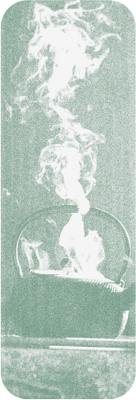
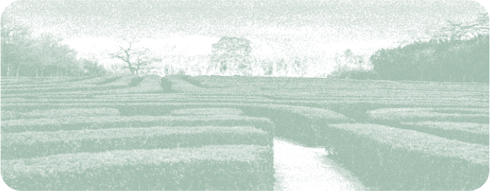
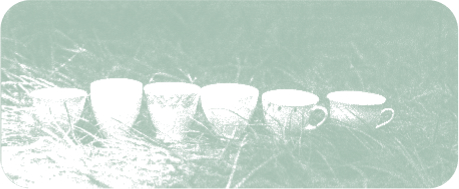
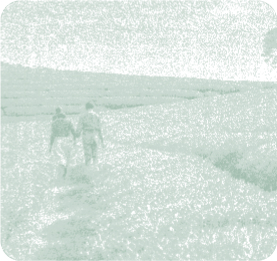
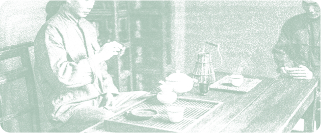

пролив — медиа

цифровое пространство
для ценителей чайных напитков
рассказываем о традициях и философии чая
пролив — медиа
о чайной культуре
о проекте
для исследователей,
кто хочет узнать больше
вы сможете открыть для себя традиции и ритуалы чайной культуры, историю и особенности напитка, изучая национальные и культурные особенности


для ценителей,
кто уже погружен в культуру
вы сможете получить тексты о чае, о его традициях и возможностях, личный эксперимент и состояние вдумчивости и уединения в одной из воображаемых комнат